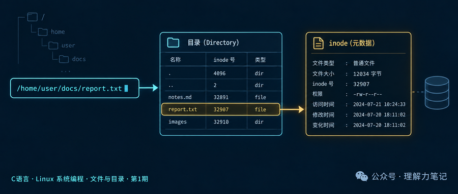
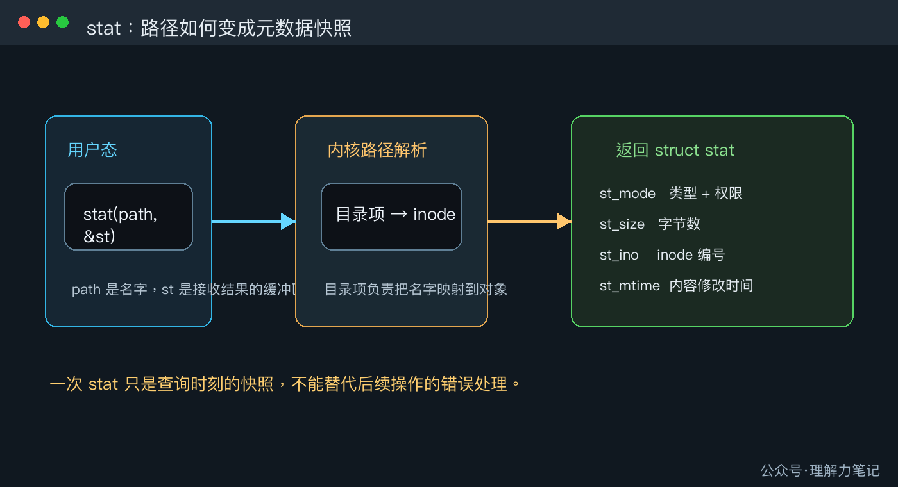
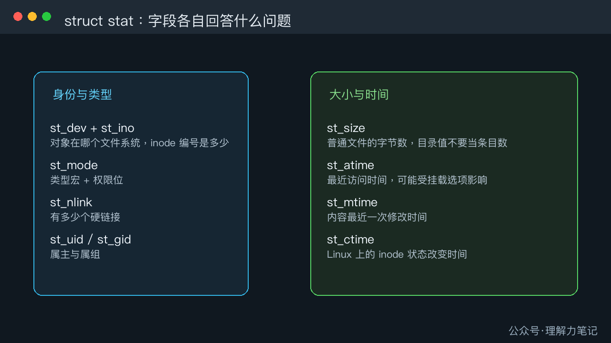

用 stat 看懂文件类型、大小和 inode
结论： 路径只是名字，真正描述文件状态的是 struct stat。调用 stat(path, &st) 成功后，可以从 st_mode 判断类型，从 st_size 读取大小，从 st_ino 读取 inode 编号，再按需读取硬链接数、属主和时间字段。stat 返回的是查询时刻的快照，不能替代后续操作的错误处理。

这篇文章怎么读？
无论你为什么点进来，都能各取所需。只解决手头问题，看第一章就够；想彻底搞懂，再往下读。
| 你是谁 |
看哪一章 |
会得到什么 |
| 搜索者 / 被推荐者 |
第一章 · 先解决问题 |
最快的答案（知其然） |
| 学习者 |
第二章 · 机制解释 |
底层的来龙去脉（知其所以然） |
| 编程者 |
第三章 · 工程使用 |
正确、能直接用的写法 |
| 求职者 |
第四章 · 面试提炼 |
会怎么问、怎么答（按需） |
你在写文件管理器、日志巡检工具或安装脚本时，通常先拿到一个路径，然后要回答几个问题：它是普通文件还是目录？有多大？属于哪个 inode？最近什么时候改过？这些信息不需要把文件内容读一遍，stat 就是专门做这件事的接口。
第一章 · 先解决问题：stat 把路径变成一份元数据快照
最短的用法是声明一个 struct stat，调用 stat，检查返回值，再读取字段。下面的实验同时查询普通文件和目录，避免把目录的大小误认为目录项数量。
最小实验
#define _POSIX_C_SOURCE 200809L
#include <errno.h>
#include <fcntl.h>
#include <stdio.h>
#include <stdlib.h>
#include <string.h>
#include <sys/stat.h>
#include <unistd.h>
static const char *file_type(mode_t mode)
{
if (S_ISREG(mode)) return "regular";
if (S_ISDIR(mode)) return "directory";
if (S_ISLNK(mode)) return "symlink";
if (S_ISCHR(mode)) return "char-device";
if (S_ISBLK(mode)) return "block-device";
if (S_ISFIFO(mode)) return "fifo";
if (S_ISSOCK(mode)) return "socket";
return "unknown";
}
static int write_all(int fd, const char *data, size_t length)
{
size_t written = 0;
while (written < length) {
ssize_t n = write(fd, data + written, length - written);
if (n < 0) {
if (errno == EINTR) continue;
return -1;
}
if (n == 0) {
errno = EIO;
return -1;
}
written += (size_t)n;
}
return 0;
}
static int print_stat(const char *path)
{
struct stat st;
if (stat(path, &st) == -1) {
fprintf(stderr, "stat %s: %s\n", path, strerror(errno));
return -1;
}
printf("%s: type=%s size=%lld inode=%llu nlink=%llu mode=%#o\n",
path,
file_type(st.st_mode),
(long long)st.st_size,
(unsigned long long)st.st_ino,
(unsigned long long)st.st_nlink,
(unsigned int)(st.st_mode & 07777));
return 0;
}
int main(void)
{
const char *file_path = "stat_demo_file.tmp";
const char *dir_path = "stat_demo_dir.tmp";
const char payload[] = "hello\n";
int fd = -1;
int status = EXIT_FAILURE;
if (unlink(file_path) == -1 && errno != ENOENT) {
fprintf(stderr, "unlink %s: %s\n", file_path, strerror(errno));
return EXIT_FAILURE;
}
if (rmdir(dir_path) == -1 && errno != ENOENT) {
fprintf(stderr, "rmdir %s: %s\n", dir_path, strerror(errno));
return EXIT_FAILURE;
}
fd = open(file_path, O_WRONLY | O_CREAT | O_EXCL, 0640);
if (fd == -1) {
fprintf(stderr, "open %s: %s\n", file_path, strerror(errno));
goto cleanup;
}
if (write_all(fd, payload, sizeof(payload) - 1U) == -1) {
fprintf(stderr, "write %s: %s\n", file_path, strerror(errno));
goto cleanup;
}
if (close(fd) == -1) {
fprintf(stderr, "close %s: %s\n", file_path, strerror(errno));
fd = -1;
goto cleanup;
}
fd = -1;
if (print_stat(file_path) == -1) goto cleanup;
if (mkdir(dir_path, 0750) == -1) {
fprintf(stderr, "mkdir %s: %s\n", dir_path, strerror(errno));
goto cleanup;
}
if (print_stat(dir_path) == -1) goto cleanup;
status = EXIT_SUCCESS;
cleanup:
if (fd != -1 && close(fd) == -1) {
fprintf(stderr, "close %s: %s\n", file_path, strerror(errno));
status = EXIT_FAILURE;
}
if (unlink(file_path) == -1 && errno != ENOENT) {
fprintf(stderr, "unlink %s: %s\n", file_path, strerror(errno));
status = EXIT_FAILURE;
}
if (rmdir(dir_path) == -1 && errno != ENOENT) {
fprintf(stderr, "rmdir %s: %s\n", dir_path, strerror(errno));
status = EXIT_FAILURE;
}
return status;
}
编译与运行
环境是 macOS Darwin 23.6.0、Apple clang 16.0.0，编译时打开严格警告：
cc -std=c17 -Wall -Wextra -Wpedantic -Wconversion -Wshadow -O0 -g stat_demo.c -o stat_demo
./stat_demo
实际结果
stat_demo_file.tmp: type=regular size=6 inode=65986394 nlink=1 mode=0640
stat_demo_dir.tmp: type=directory size=64 inode=65986395 nlink=2 mode=0750
inode 编号和目录的 size 会随文件系统变化。稳定的观察结果是：hello\n 占 6 个字节，普通文件有 1 个硬链接；目录也有自己的 inode，目录大小不是“里面有几个文件”。
常见错误有三个。第一，把 st_mode 整数直接和 S_IFREG 比较，正确做法是调用 S_ISREG(st.st_mode)。第二，把 st_size 当成任何对象都通用的“内容长度”，目录和设备文件要按各自语义解释。第三，stat 失败后仍读取 st，失败路径上的结构体内容不能使用。
第二章 · 从操作系统视角理解：路径先找到 inode，stat 再复制元数据
文件名本身不是文件对象。文件系统先在父目录的目录项中查找名字，目录项把名字映射到 inode；inode 保存类型、权限、大小、链接数和时间等元数据。stat 将这份状态复制到用户空间的 struct stat 中。

struct stat 里的字段各自回答一个问题

st_mode 同时包含文件类型和权限位。类型判断用 S_ISREG、S_ISDIR 等宏，权限位可用 st_mode & 07777 取出，但权限位的完整含义放到后续篇目展开。st_size 对普通文件表示字节数。符号链接的值是链接文本长度，目录的值是目录对象在该文件系统中的大小，不能当作子项计数。st_ino 是 inode 编号，只在所属文件系统内保证唯一。跨挂载点比较对象时，还要结合 st_dev。st_nlink 是硬链接数。多个目录项可以指向同一个 inode，所以文件名数量和 inode 数量不是一回事。st_atime、st_mtime、st_ctime 都是时间字段。在 Linux 语境下，mtime 表示内容修改时间，ctime 表示 inode 状态改变时间，后者不是创建时间。访问时间还可能受 relatime、noatime 等挂载选项影响。
stat、fstat 和 fstatat 的区别在于定位对象的方式：stat 根据路径，fstat 根据已经打开的 fd，fstatat 还能把相对路径锚定在目录 fd 上。本篇先聚焦最常见的 stat；符号链接自身和目标的差异留给下一篇 stat 与 lstat。
还有一个容易忽略的边界：查询过程中另一个进程可能正在修改文件。Linux 手册明确提醒，stat 返回结构体的不同字段可能来自执行期间的不同瞬间。因此，看到“文件存在”不等于下一行 open 一定成功，看到某个权限也不等于后续操作不会被拒绝。
第三章 · 工程上怎么使用：把 stat 当查询，不当授权
返回值和错误路径
stat 成功返回 0，失败返回 -1，只有失败后才读取 errno。常见错误包括：路径组件不存在时的 ENOENT，目录搜索权限不足时的 EACCES，路径中间某一项不是目录时的 ENOTDIR。日志里应同时记录路径和错误信息，避免只输出一个模糊的“失败”。
选择合适的接口
只需要根据路径展示信息时用 stat。已经打开文件并希望查询“这个 fd 当前指向的对象”时用 fstat，这样不会再次依赖一条可能变化的路径。需要在固定目录下处理相对名称时，使用 openat、fstatat 等 *at 接口，把路径基准绑定到目录 fd。Linux 专属的 statx 能请求更细的字段，但不属于 POSIX，不能直接当成可移植替代品。
资源和竞态
stat 自己不返回 fd，不需要关闭资源，但它也不会锁住文件。不要写成“先 stat 判断是普通文件，再 open 并假设对象没有变化”的安全检查。对安全敏感的操作，应让真正执行操作的接口承担检查，并在操作返回后处理错误；后续的 openat、O_NOFOLLOW 和 Linux openat2 会专门讨论这类路径竞态。
一个可复用的读取框架如下：
int describe(const char *path)
{
struct stat st;
if (stat(path, &st) == -1) {
fprintf(stderr, "stat %s: %s\n", path, strerror(errno));
return -1;
}
if (S_ISREG(st.st_mode)) {
printf("regular file: %lld bytes\n", (long long)st.st_size);
} else if (S_ISDIR(st.st_mode)) {
puts("directory");
} else {
puts("other file type");
}
return 0;
}
这个函数只负责描述查询结果，不在里面顺手 open、删除或修改路径，调用方可以根据返回值决定下一步，并对下一步操作再次检查错误。
第四章 · 面试提炼
简短回答
stat 根据路径读取文件状态，结果写进 struct stat。st_mode 用类型宏判断文件类型，st_size 是大小，st_ino 是所属文件系统内的 inode 编号，调用失败返回 -1 并设置 errno。它给的是快照，不是对后续操作的保证。
常见追问
stat 会读取整个文件吗？ 不会。它读取文件系统维护的元数据，不需要扫描普通文件内容。
st_ctime 是创建时间吗？ 在 Linux 上不是，它表示 inode 状态改变时间。创建时间需要平台或文件系统提供的额外接口，不能用 st_ctime 代替。
为什么不能直接比较 st_mode？ 因为 st_mode 同时放了类型和权限位，应使用 S_ISREG、S_ISDIR 等宏提取类型语义。
参考资料
往期回顾
C 语言·Linux 系统编程·文件与目录·选题预告
转载说明：本文用于技术学习与交流，转载请保留原文与出处。
本文为公众号「理解力笔记」原创。转载请联系作者，并保留出处。